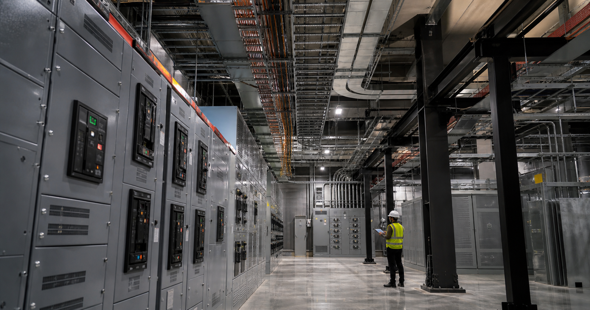

Commissioning Is Where AI Infrastructure Becomes Capacity

A completed data hall is not the same thing as usable AI capacity. Before the first production workload runs, every electrical, cooling, controls, and safety system has to perform as one coordinated environment. That is the purpose of commissioning.
Construction Complete Is Only a Milestone
Equipment can be installed correctly and still fail at the system level. Protection settings may not coordinate. A controls sequence may react differently under load than it did in isolation. Cooling capacity may exist, but not reach the rack profile the compute platform requires. Commissioning finds those gaps before operations depend on them.
Test the Full Power Path
For high-density AI deployments, testing should follow power from the utility interconnect through transformers, switchgear, distribution equipment, and the final connection to the rack. Functional tests confirm transfer sequences, alarms, redundancy, and protective devices. Load testing then shows how the system behaves under realistic demand rather than ideal assumptions.
Cooling and Controls Must Move Together
AI clusters create concentrated, fast-changing thermal loads. Pumps, fans, valves, sensors, and controls need to respond as a coordinated system. Integrated testing verifies operating modes, failure responses, and the transition between normal and redundant components without risking the hardware.
Build Commissioning Into the Schedule
Commissioning works best when it begins during design. Test points, isolation methods, temporary loads, documentation, and acceptance criteria should be planned before equipment arrives. Factory testing can remove risk early, while site testing confirms that every assembled system performs in its real environment.
The Bottom Line
AI infrastructure creates value only when capacity is safe, stable, and repeatable. A disciplined commissioning program turns installed equipment into an operational platform and gives the owner evidence that the facility is ready for the workload it was built to support.